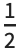

Dirac Algebra
This note discusses the details of the -dimensional Dirac algebra as implemented in Matchete. At present Matchete operates with an anti-commuting implementation of γ5 (Naive Dimensional Regularization), which implies that the Dirac trace is non-cyclic in order to avoid mathematical inconsistencies.
Thus, γ5 is treated as a purely symbolic object and does not equate to an antisymmetric combination of four ordinary Dirac matrices.
| RefineDiracProducts | decomposes products of Dirac matrices to a basis |
| DiracTrace | performs the Dirac trace of an expression |
| Short hand | Internal object |
Description
|
| γ[μ,…] | GammaM |
γμ matrix and anti-symmtrized products of the same
|
| γ[5] | Gamma5 |
γ5 matrix
|
| PL, PR | Proj | Projection matrices PL,R=(1∓γ5) |
| CC | GammaCC |
The charge conjugation matric C
|
| σ | GammaM | σμν matrix |
Basic objects of the Dirac algebra with their convenient user-exposed notation and their internal representation.
Matrix multiplication in the space of Dirac algebra is done with NonCommutativeMultiply, which can be input with the in build Mathematica notation "**." This Dirac spinors in the form of fermion fields, can also multiply in to the spin chains, created with NonCommutativeMultiply. All Dirac matrices in a spin chain get merged into a DiracProduct head.
These properties are a continuation of the four-dimensional identities (with the choice of a real C)
The basis for the -dimensional Dirac algebra is infinite dimensional. A suitable basis is formed by all anti-symmetrized products of the gamma matrices. We use the notation
Any product of Dirac matrices can be expressed as a sum of the anti-symmetric basis tensors. This is done automatically with RefineDiracProducts:
This function can also be used in cases where some of the Lorentz indices are contracted with each other:
Dirac traces of a product of Dirac matrices can be performed with DiracTrace. Dirac tracing using anti-commuting γ5 is known to cause mathematical ambiguities.
For traces with and even number of γ5 matrices, the γ5 matrices can be anti-commuted until they are next to each other and produce the identity. These traces are unambiguous and reproduce the Four-dimensional result, but with -dimensional metrics (unless some of the indices are contracted).
In traces with an odd number of γ5 matrices, mathematical consistency can be obtained only by giving up on trace cyclicity; that is, in traces with six or more ordinary Dirac matrices in addition to γ5, we cannot freely cycle matrices in the trace. This introduces an ambiguous (ϵ) piece of the trace, which depends on where the trace is started. A definite value is assigned to the γ5-odd traces following from the KKS prescription. This prescription relies on the unique projection of gamma matrices onto the basis of anti-symmetric combinations, Γμ1μ2…. We define